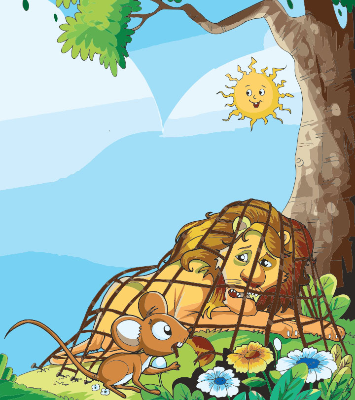

<body style="border: 5px solid black;border-radius: 10px;display: flow-root;"></body>
<h1 style="text-align: center;">The Lion and the Mouse</h1>
<center></center>
<p>
    Once when a lion, the king of the jungle was asleep, a little mouse began
running up and down on him. This soon awakened the lion, who placed his huge paw
on the mouse, and opened his big jaws to swallow him.
</p>
<p>
    "Pardon, O King!" cried the little mouse. "Forgive me this time. I shall never
repeat it and I shall never forget your kindness. And who knows, I may be able to do
you a good turn one of these days!", the mouse said. The lion was so tickled by the
idea of the mouse being able to help him that he lifted his paw and let him go.

</p>
<p>
    Sometime later, a few hunters captured the lion, and tied him to a tree. After
that they went in search of a wagon, to take him to the zoo.
</p>
<p>
    Just then the little mouse happened to pass by. On seeing the lion's plight, he
ran up to him and gnawed away the ropes that bound him, the king of the jungle.
'Was I not right?' said the little mouse, The lion also agreed
</p>
<h3>
    Moral:
</h3>
<p>
    The moral of the story <b> "The Lion and the Mouse"</b> is that kindness is never wasted. 
</p>